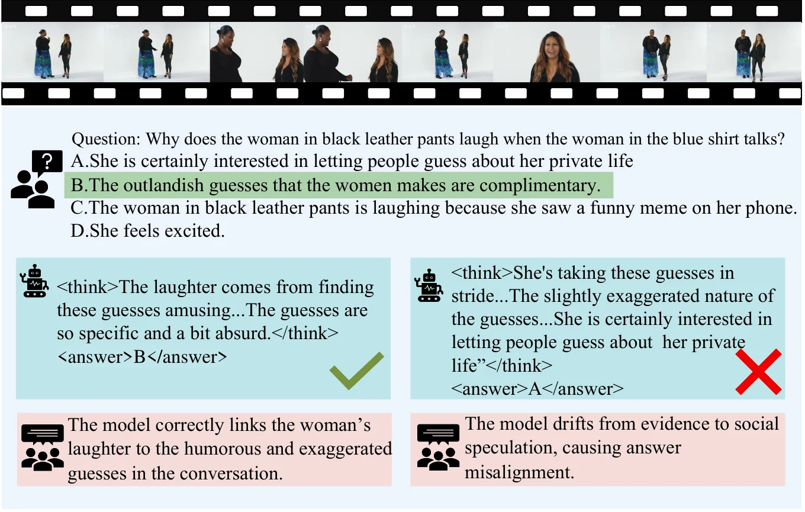
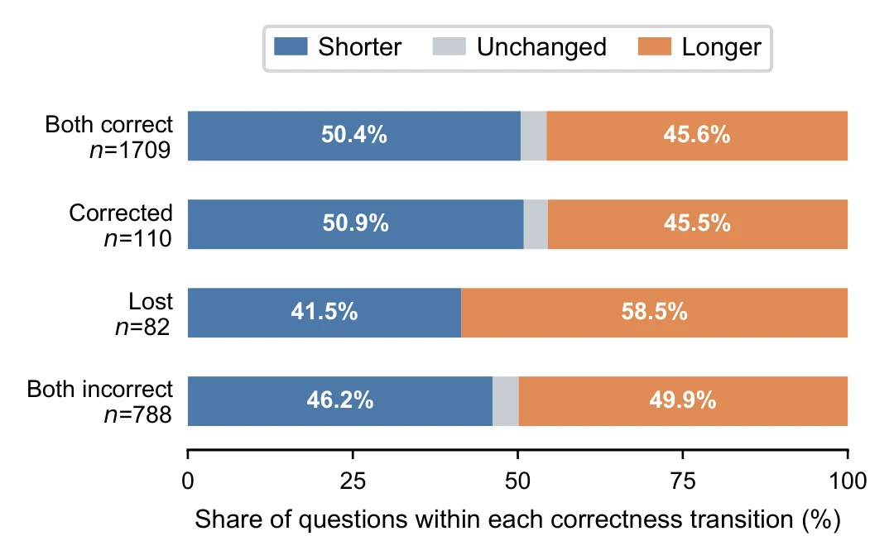
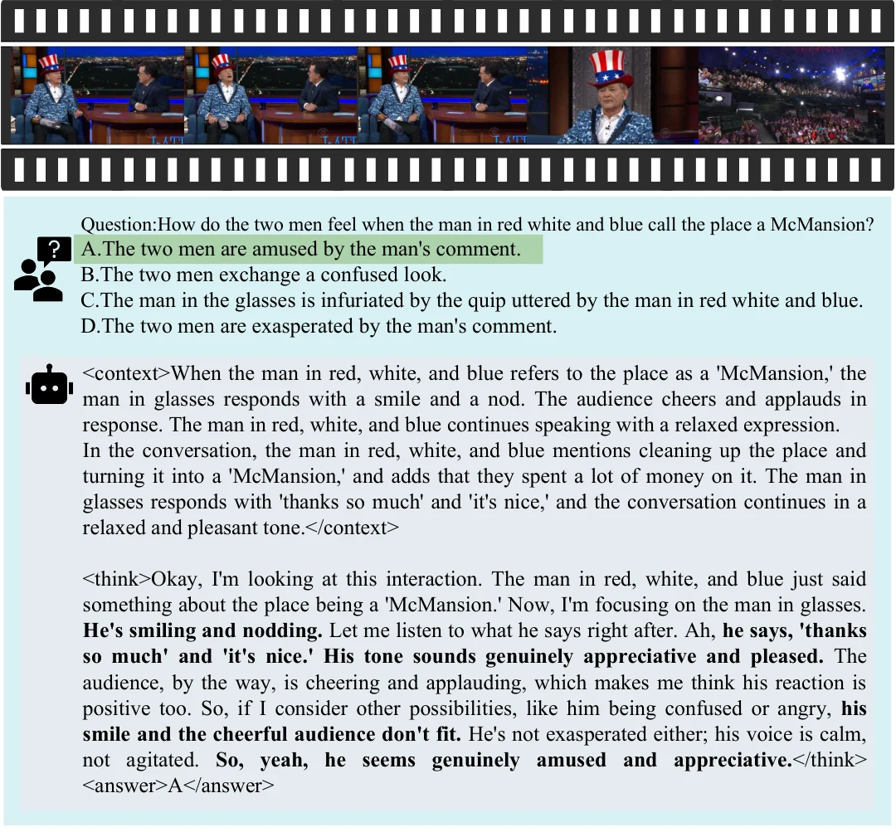

Structured-reasoning initialization
Supervised fine-tuning teaches context description, reasoning, and final-answer generation.

This example asks why a woman laughs during a conversation. The response on the left connects her laughter to the exaggerated guesses made by the other speaker and selects option B. The response on the right turns the same interaction into a claim about her wanting others to speculate about her private life and selects option A.
The contrast illustrates the motivation for the paper. A response needs enough explanation to connect the observed interaction with an answer, while additional speculation can move the interpretation away from the evidence. CoGA-GRPO uses answer correctness to guide length incentives during training, with the aim of preserving useful reasoning as it encourages concise generation.
Video reasoning requires balancing answer accuracy and generation length. CoGA-GRPO extends group relative policy optimization with a shared score derived from rollout correctness. This score adapts KL regularization and determines which groups are eligible for length shaping. Within eligible groups, a bounded reward adjustment favors shorter correct responses that satisfy an answer-score margin.
We initialize CoGA-GRPO and Standard GRPO from the same reproduced Qwen2.5-Omni-7B structured-reasoning checkpoint. On 2,689 IntentBench questions under matched settings, CoGA-GRPO improves accuracy by 1.04 percentage points and reduces mean generation length by 3.84 tokens. It achieves 59.82% accuracy on Daily-Omni and 47.9% on WorldSense.
One correctness-derived signal coordinates two training decisions.
A fixed regularization weight treats every response group in the same way, even when the current policy succeeds much more often on some prompts than others. CoGA-GRPO recomputes an allocation score from each sampled group and uses it to adapt both regularization and eligibility for length shaping. The score reflects the policy’s observed performance on that prompt, which can change during training.
Supervised fine-tuning teaches context description, reasoning, and final-answer generation.
The model receives the question and available media. The reference answer is reserved for scoring.
Answer and format scores provide the base training reward for each completion.
Group correctness determines the main score. An optional variant adds input processing load.
Groups with lower observed correctness receive weaker regularization toward the frozen reference policy.
A recent-score window determines eligible groups. Correct responses must also pass an answer-score margin.
Combine the base and length rewards, center them within the group, and update the trainable adapters.
The workflow begins with a Qwen2.5-Omni-7B structured-reasoning checkpoint. During group-relative training, the model generates six completions for the same prompt. Their answer scores determine correctness indicators, which are summarized into a group allocation score before length shaping is added. The same score then controls the KL penalty weight and the group’s eligibility for a length adjustment.
For eligible correct responses that pass the score margin, a completion shorter than its group mean receives a positive adjustment, while a longer completion receives a negative adjustment. The adjustment is bounded, and incorrect responses receive no direct length term in the main method. Group centering can still change their relative training signal when other responses receive an adjustment. The reference policy is evaluated with the trainable adapters disabled.
Supervised fine-tuning establishes the structured response format. Group-relative optimization then adapts regularization and length rewards. Audio is included during supervised fine-tuning when an audio stream is present; video-derived audio is disabled in the reported second stage.
The reference length is the mean length of the six completions for the same prompt. This lets the incentive depend on the sampled responses for each question. Eligibility follows the recent allocation-score distribution through a rolling window.
The main method uses rollout correctness alone. Input-load augmentation is a separate variant. Standard GRPO and CoGA-GRPO share the initialization, training budget, base rewards, and evaluation settings in the matched comparison.
Accuracy, response length, and the effect of each controller.
The matched IntentBench evaluation covers all 2,689 questions from 633 videos, including intention, emotion, deception, and related human-centered reasoning tasks. Both methods use the same decoding protocol. The paper also reports full-set evaluation on Daily-Omni, with 1,197 audio-visual reasoning questions, and WorldSense, with 3,172 questions spanning eight video domains.
On IntentBench, CoGA-GRPO answers 28 more questions correctly than Standard GRPO while reducing mean generation length by 3.84 tokens, or approximately 0.85%. The additional benchmark scores extend the evaluation to audio-visual alignment and broader real-world video understanding.
| Measure | Standard GRPO | CoGA-GRPO |
|---|---|---|
| Correct answers | 1,791 | 1,819 |
| Accuracy | 66.60% | 67.65% |
| Mean generated tokens | 452.98 | 449.14 |
The paper uses four frames per video at a target of one frame per second across all three benchmarks. Evaluation uses greedy decoding, a shared context prefill, and a maximum of 1,024 newly generated tokens. Binary reference-answer agreement is the main outcome for the paired IntentBench comparison. Mean answer reward is reported separately because some answer types allow partial credit.

This figure groups the 2,689 paired questions by how correctness changes from Standard GRPO to CoGA-GRPO. Both models answer 1,709 questions correctly and 788 incorrectly. CoGA-GRPO corrects 110 questions missed by the baseline and loses 82 questions that the baseline answers correctly. Each horizontal bar shows the share of shorter, equal-length, and longer responses within that group.
Among corrected questions, 50.9% of responses are shorter and 45.5% are longer. Among lost questions, 58.5% are longer and 41.5% are shorter. These patterns show that a change in response length can accompany either outcome at the individual-question level. The overall reduction in mean length is an aggregate result across all four groups.

The three panels compare accuracy, mean answer reward, and mean generated-token count with Standard GRPO. Points show mean paired differences; horizontal bars show 95% percentile confidence intervals from 30,000 question-level bootstrap draws. The vertical reference line marks no change. Accuracy differences are expressed in percentage points, and reward differences are scaled by 100.
The main configuration combines a positive accuracy difference with a negative length difference. Its question-level interval for mean length change runs from 7.72 fewer to 0.04 fewer tokens. The paper also resamples whole videos to account for multiple questions associated with the same clip. In that analysis, the main method’s accuracy interval runs from 0.04 to 2.05 percentage points, and its length interval runs from 7.59 fewer to 0.13 fewer tokens.

The horizontal axis measures the change in mean generated-token count relative to Standard GRPO, and the vertical axis measures the accuracy change in percentage points. The baseline is at the origin. A point in the upper-left region represents higher accuracy with shorter mean responses. Dynamic KL alone improves accuracy with longer outputs, while length shaping alone produces a smaller accuracy gain with a modest reduction in length. CoGA-GRPO combines both components and answers 28 more questions correctly with 3.84 fewer tokens per response.
Input-load augmentation produces the shortest mean outputs, at 447.82 tokens, but answers nine fewer questions correctly than the main configuration. Both stress tests use this augmented variant as their matched comparator. Rewarding longer incorrect responses in hard groups loses 36 correct answers and adds 6.18 tokens on average. Reversing KL allocation gains five correct answers but adds 5.59 tokens. These comparisons illustrate how the controller settings change the observed accuracy and length operating point.
IntentBench · Emotion
Emotion questions can require interpreting facial reactions, speech, and the surrounding social interaction together. This example examines how the model explains an answer to a question about two speakers reacting to a remark.

After one speaker calls the place a “McMansion,” the question asks how the two men feel. CoGA-GRPO selects option A, amusement, matching the reference answer. The displayed explanation cites the man in glasses smiling and nodding, his appreciative reply, and the audience’s cheers and applause. It connects these observations to a positive response and uses the calm tone to assess the alternatives involving anger or exasperation.
The audience reaction adds context for interpreting the exchange as humorous. The explanation provides more direct support for the man in glasses’ reaction than for the other speaker’s emotional state, although the question asks about both men. The case shows how the generated explanation connects several reported cues to a benchmark answer.